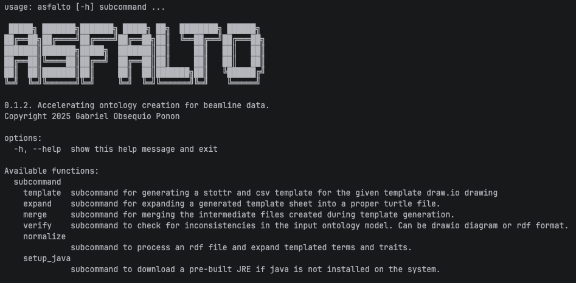
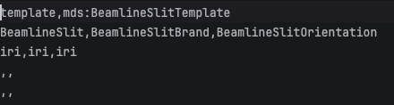
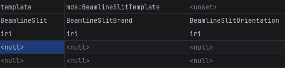

Quickstart#
NOTE: It is recommended you install in a python environment. If you do not know how to set up a virtual environment, please refer to this link or check out python’s instructions.
Before You Start#
Install ASFALTO with pip.
warning The ASFALTO package only supports python versions >=3.10.
(.venv) $ pip install asfalto
Please make sure you have an internet connection when first starting ASFALTO. This will cache all the required prerequisites for running the package.
Run the following to see if it properly installed:
(.venv) $ asfalto --help
It should show the following:
{kind=link}

Download the Example#
Clone the official repo to access the example. We recommend you stay on the master branch:
(.venv) $ git pull https://github.com/Gabbyton/asfalto.git
(.venv) $ cd asfalto/examples/
There should be one file, slit-example.drawio.
Converting from draw.io to .ttl#
Open the slit-example.drawio file to see the following diagram:
Converting from diagram to template#
To turn this diagram into a template, use the following commands on your terminal:
(.venv) $ cd examples # go into the examples folder
(.venv) $ cemento drawio_ttl slit-example.drawio slit-example.ttl
(.venv) $ asfalto template slit-example.ttl .
Editing the template file#
You should now get a template file (.csv) that looks like this when opened in a text editor
{kind=link}

Figure 1. A sample CSV template file. Note that the first row of the file contains the name of the template. The second row contains the actual headers.
And like this when opened with a sheet-based editor (e.g. LibreOffice Writer, Google sheets, PyCharm IDE, etc.):
{kind=link}

Figure 2. A sample CSV file previewed from Pycharm IDE. Note that PyCharm is not required nor explicitly recommended by the authors for usage. You are free to use any text-based editor that can handle CSV files.
Expanding and Merging the Knowledge Graph#
Then back on the terminal, expand the sheet using the following command:
(.venv) $ asfalto expand slit-example-template_sheet.csv
To get the final turtle file with the populated Knowledge Graph (KG), use the following command:
(.venv) $ asfalto merge .
Conclusion#
This will merge all files that were generated by the above steps into a single file. This output file will be slit-example-final.ttl which you can now use for your application.
That’s it. From here you can use your KG for queries, linked data management, and even GraphRAG applications (this KG is a bit too small to be useful though).
If you want to dive deeper into the package and see all of its features in action, please make sure to check our user guide for an in-depth tutorial.